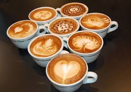

Manfaat Kopi
Khasiat Minum Kopi
Kopi meningkatkan kecerdasan
Rasa lelah dapat diusir dengan meminum kopi karena kandungan kafein dalam kopi merupakan kandungan psikoaktif.
Kafein dari kopi akan diserap darah dan sampai ke otak,
di mana kafein akan bekerja memblokir adenosine sehingga neurotransmitters seperti norepinephrine dan dopamine bertambah.
Alhasil, otak bisa bekerja maksimal.
Kopi juga mendukung fungsi kognitif otak sehingga ingatan lebih kuat, mempertajam emosi, meningkatkan kewaspadaan, serta fungsi kognitif otak...
Kopi meningkatkan kecerdasan
Rasa lelah dapat diusir dengan meminum kopi karena kandungan kafein dalam kopi merupakan kandungan psikoaktif.
Kafein dari kopi akan diserap darah dan sampai ke otak, di mana kafein akan bekerja memblokir adenosine sehingga neurotransmitters seperti norepinephrine dan dopamine bertambah. Alhasil, otak bisa bekerja maksimal. Kopi juga mendukung fungsi kognitif otak sehingga ingatan lebih kuat, mempertajam emosi, meningkatkan kewaspadaan, serta fungsi kognitif otak.
Kopi bisa membakar lemak
Suplemen pembakar lemak hampir selalu pasti mengandung kafein. Kafein merupakan bahan alami yang telah terbukti dalam berbagai penelitian sanggup membantu membakar lemak dan meningkatkan metabolisme tubuh hingga 3 - 11%. Namun, manfaat membakar lemak ini bisa saja tidak terlalu efektif pada orang yang sudah lama meminum kopi.
Kopi membuat tubuh lebih bertenaga
Kafein dapat meningkatkan epinephrine atau kadar adrenalin dalam darah yang membuat tubuh lebih bertenaga. Pasalnya, kafein bisa menghancurkan sel lemak dalam darah dan mengubah lemak menjadi energi yang memberi tenaga bagi tubuh. Nah, meminum secangkir kopi murni tanpa gula setengah jam sebelum berolahraga dapat membuat Anda lebih kuat menghadapi latihan fisik yang intens.
Kopi mencegah penyakit
Meminum kopi menurunkan risiko berbagai penyakit seperti:
1. Secangkir kopi sehari dapat menurunkan risiko terkena diabetes tipe II hingga sebesar 7%.
2. Kopi mencegah kepikunan maupun Alzheimer sebab peminum kopi memiliki daya ingat yang kuat serta saraf yang bebas dari kabut Alzheimer hingga sebesar 65%.
3. Kafein dalam kopi dapat menurunkan risiko terkena penyakit Parkinson hingga 32 - 60 %.
4. Kopi yang diminum secara teratur dalam sehari dapat menurunkan risiko sirosis (pengerasan hati) hingga mencapai 80%.
5. Kopi untuk melawan kanker liver dan kanker usus hingga risiko turun sebanyak 15 - 40%.
6. Kopi memang dapat meningkatkan tekanan darah, namun jumlahnya hanya dalam skala kecil saja dan tekanan darah akan normal kembali jika Anda teratur meminum kopi. Artinya, kopi bukan penyebab utama penyakit jantung dan justru dapat mencegah stroke. Tapi, tetap waspadai dan batasi kandungan kafein yang dikonsumsi.
Kopi untuk umur panjang
Angka kematian pada peminum kopi berkurang hingga 20% pada pria dan 26% pada wanita dalam jangka waktu 18 hingga 24 tahun. Para penderita diabetes tipe II juga memiliki kesempatan bertahan hidup lebih lama hingga 70% karena mengonsumsi kopi.
Kopi membuat bahagia
Penelitian di Harvard School of Public Health tahun 2011 menyatakan turunnya risiko depresi sebanyak 20 persen pada wanita yang meminum 4 gelas kopi atau lebih dalam sehari. Penelitian lain menyebutkan bahwa empat gelas kopi atau lebih dalam sehari bisa menurunkan niat bunuh diri hingga 50 persen.
Jadi, minumlah kopi agar Anda bahagia.